1 OftW pre-giving-tuesday-email upselling split test (considering ‘impact vs emotion’)
1.1 The trial
In December 2021, OftW sent out a sequence of emails to existing OftW pledgers/participants asking them for an additional donation. There were two ‘treatment variants’; an emotional email and a standard impact-based email. The treatment was constant by individual (the same person always got emails with the same theme.
The details are presented in our (currently private) gitbook HERE and in the linked pre-registration (also on OSF).
1.2 Capturing data
Kennan and Chloe captured the data and Metadata from
- The OFTW database
- SurveyMonkey
Putting this into the (private) Google sheet linked HERE
We added some metadata/explainers to that data.1
1.3 Input and clean data
We input the sheets from the external Google sheet location (access required)…
gs4_auth(scope = "https://www.googleapis.com/auth/drive") drive_auth(token = gs4_token()) #Mailchimp data oftw_21_22_mc <- read_sheet("https://docs.google.com/spreadsheets/d/1iUKXkEqoadBgtUG_epBzUzCgA_J5mdWWstcXtpAdNJs/edit#gid=521638649", sheet="Raw data (Mailchimp)") %>% select(-`Treatment group`) %>% #remove an un-useful repeated name column mutate(`Treatment Group` = purrr::map_chr(`Treatment Group`, ~ .[[1]])) %>% select(`Email Address`, `Email Date`, `Treatment Group`, Opens, `Donate link clicks`, everything()) %>% #Most relevant features organized first arrange(`Email Address`) #later: remove features brought in from OFTW database, reconstruct it oftw_21_22_mc %>% names() %>% paste(collapse=", ")
## [1] "Email Address, Email Date, Treatment Group, Opens, Donate link clicks, sheet_descriptor, First Name, Last Name, Email Number, Class Year, Donor status, Total Given, Donation amount, Donation frequency, Start string, Platform, Portfolio string, Class lead, Impact 1, Impact 2, Impact 3, Employer, Pledge string, School string, Pledge year, Cancellation Type, Donation Amount String, OFTW matching, OFTW match amount, Corporate match amount, Bonuses announced, Post-bonus contact date, Email Preferences, Start Date, Lives Saved, Member Rating, Record rank, Total Giving Season contributions, Total Giving Season contribution amount"#...input descriptors for the above (do this later from "doc: ...Mailchimp" sheet
#Donations data (and OftW database info) oftw_21_22_db_don <- read_sheet( "https://docs.google.com/spreadsheets/d/1iUKXkEqoadBgtUG_epBzUzCgA_J5mdWWstcXtpAdNJs/edit#gid=521638649", sheet="Giving Season contributions (BigQuery)") %>% mutate(`Treatment group` = purrr::map_chr(`Treatment group`, ~ .[[1]])) %>% select(`email`, `primary_email`, `donation_date`, `Net_Contribution_Amount_USD`, `payment_platform`, everything()) %>% #Most relevant features organized first filter(donation_date>=as.Date("2021-11-15")) # At least for now, remove pre-treatment donation data oftw_21_22_db_don %>% names() %>% paste(collapse=", ")
## [1] "email, primary_email, donation_date, Net_Contribution_Amount_USD, payment_platform, Treatment group, Number of email opens, oftw_partner, school, chapter_type, portfolio, contribution_frequency, pledge_date, pledge_start_date, pledge_end_date, donor_status, cancellation_type, pledge_amount, pledge_contribution_frequency, x"1.3.1 Labeling and cleaning
The code …
…makes names snake_case, using original names as labels…
labelled::var_label(oftw_21_22_mc) <- names(oftw_21_22_mc) names(oftw_21_22_mc) <- snakecase::to_snake_case(names(oftw_21_22_mc)) labelled::var_label(oftw_21_22_db_don) <- names(oftw_21_22_db_don) names(oftw_21_22_db_don) <- snakecase::to_snake_case(names(oftw_21_22_db_don))
…and anonymizes the data, hashing anything with the chance of being identifying
salty_hash <- function(x) { salt(.seed = 42, x) %>% hash(.algo = "crc32") } oftw_21_22_mc <- oftw_21_22_mc %>% dplyr::select(-first_name, -last_name) %>% mutate(across(c(email_address, employer, school_string), salty_hash)) oftw_21_22_db_don <- oftw_21_22_db_don %>% mutate(across(c(primary_email, email, school), salty_hash))
Roll up to 1 per person; summarize and pivot_wider
outcomes_base_mc <- c("opens", "donate_link_clicks") oftw_21_22_mc_wide <- oftw_21_22_mc %>% mutate( treat_emotion = case_when( treatment_group=="1.000000" ~ 0, treatment_group == "2.000000" ~ 1) ) %>% group_by(email_address) %>% mutate(across(all_of(outcomes_base_mc), sum, .names = "{.col}_tot")) %>% tidyr::pivot_wider(names_from = email_number, values_from = c("opens", "donate_link_clicks")) %>% mutate(d_click_don_link = donate_link_clicks_tot > 0) %>% arrange(email_address) %>% filter(row_number()==1) oftw_21_22_db_don <- oftw_21_22_db_don %>% ungroup() %>% group_by(email) %>% mutate( don_tot = sum(net_contribution_amount_usd), num_don = n(), d_don = num_don > 0, don_tot_ot = sum(net_contribution_amount_usd[contribution_frequency == "One-time"]), num_don_ot = sum(contribution_frequency == "One-time"), d_don_ot = num_don_ot > 0, #WAIT THIS IS NOT WIDE DATA -- don't interpret it as 'number of individuals' don_tot_ss = sum(net_contribution_amount_usd[payment_platform == "Squarespace"]), num_don_ss = sum(payment_platform == "Squarespace"), d_don_ss = num_don_ss > 0, ) oftw_21_22_db_don_persons <- oftw_21_22_db_don %>% arrange(email) %>% filter(row_number()==1) oftw_mc_db <- full_join(oftw_21_22_mc_wide, oftw_21_22_db_don_persons, by = c("email_address" = "email")) %>% mutate(across(starts_with("d_don"), ~replace(., is.na(.), 0)), #make it a 0 if it's not in the donation database d_open= if_else(!is.na(treat_emotion),1,0) ) oftw_mc_db_openers <- oftw_mc_db %>% filter(!is.na(treat_emotion)) # oftw_21_22_db_don_wide <- oftw_21_22_db_don %>% # select(email, donation_date, net_contribution_amount_usd, payment_platform) %>% # group_by(email) %>% # mutate(row = row_number()) %>% # tidyr::pivot_wider(names_from = row, values_from = c("donation_date", "net_contribution_amount_usd"))
Prelim results
oftw_mc_db %>% tabyl(treat_emotion, d_don)
## treat_emotion 0 1
## 0 1139 266
## 1 968 222
## NA 0 411oftw_mc_db %>% tabyl(treat_emotion, d_don_ss)
## treat_emotion 0 1
## 0 1397 8
## 1 1181 9
## NA 407 4oftw_21_22_db_don_persons %>% tabyl(treat_emotion, d_don_ot)
## Error in `dplyr::select()`:
## ! Can't subset columns that don't exist.
## x Column `treat_emotion` doesn't exist.#todo: simple statistical measures along with this
1.3.2 Constructing outcome measures, especially ‘donations likely driven by email’
- Donations (presence, count, amounts) in giving seasons, 1 row per user (with treatment etc.)
- overall
- non-regular
- ‘likely from email’
are in Giving Season contributions (BigQuery)
- subset for payment platform = squarespace (unlikely to come from any other checkout page)
- email as primary key, link to
Raw Data (mailchimp), filter on ‘Donate link clicks`>0 (note that one needs aggregating by donor because it is ’per email’)
- Giving season donations ..
Giving Season contributions (BigQuery), sum donation_date Net_Contribution_Amount_USD with filters for one-time etc
Can check against fields ‘Total Giving Season contributions Total Giving Season contribution amount’
#list/matrix of rates for later use oc_mat <- oftw_mc_db %>% mutate(d_open=n()) %>% group_by(treat_emotion) %>% dplyr::summarise(across(starts_with("d_"), ~sum(.x, na.rm = TRUE), .names = "tot_{.col}")) oc_mat_r <- oc_mat %>% filter(!is.na(treat_emotion)) #where treatment observed assigned_emails <- c(2000, 2000) #I was told that about 4000 emails were sent, 2000 to each group
1.4 Descriptives and exploratory analysis
Notes:2
1.4.1 Donation and outcome summary statistics, by treatment
1.5 Basic tests: Donation incidence and amounts
(See preregistration – go through preregistered tests one at a time. Note that given the observed conversion rates I do not expect any ‘significant differences.’)
1.6 Basic tests: Clicks and retention outcomes
I’m following the approach discussed in the ‘RP methods discussion’ under “Significance and equivalence testing” with randomization inference/simulation; building to Bayes
We see a ‘small difference’ between treatment groups and it is ‘not significant in standard tests’ (tests not shown here yet). But can we put meaningful bounds on this? Can we statistically ‘rule out large effects?’
(This parallels the analysis done in HERE, which includes some further explanation of the methods)
1.6.1 Difference between two binomial random variables: Bayesian binomial test
#would need to generate 'fill in data' if we want to use bayesAB, which requires actual vectors #add blank rows for 'assigned' blank_impact <- as_tibble(matrix(NA, nrow = assigned_emails[1]- oc_mat_r$tot_d_open[1], ncol = NCOL(oftw_mc_db))) names(blank_impact) <- names(oftw_mc_db) blank_impact %<>% mutate(across(starts_with("d_"), ~ifelse(is.na(.), 0, 0)), treat_emotion=0) blank_emotion <- as_tibble(matrix(NA, nrow = assigned_emails[1]- oc_mat_r$tot_d_open[2], ncol = NCOL(oftw_mc_db))) names(blank_emotion) <- names(oftw_mc_db) blank_emotion %<>% mutate(across(starts_with("d_"), ~ifelse(is.na(.), 0, 0)), treat_emotion=1) oftw_mc_db_assigned <- bind_rows(oftw_mc_db, blank_impact, blank_emotion) %>% filter(!is.na(treat_emotion)) oftw_mc_db_assigned %>% tabyl(treat_emotion)
## treat_emotion n percent
## 0 2000 0.5
## 1 2000 0.5Opens by treatment:
# Following r https://www.sumsar.net/blog/2014/06/bayesian-first-aid-prop-test/ # alt: http://frankportman.github.io/bayesAB/ #opens_by_treat_fit <- bayes.prop.test(oc_mat_r$tot_d_open, assigned_emails, cred.mass = 0.95) #here I highlight the 95% bounds because it's a strong effect! #plot(opens_by_treat_fit) unif_prior <- c('alpha' = 1, 'beta' = 1) empir_prior <- c('alpha' = sum(oc_mat_r$tot_d_open), 'beta' = sum(assigned_emails)) #same with AB package # Fit bernoulli test opens_by_treat_AB <- bayesAB::bayesTest( oftw_mc_db_assigned$d_open[oftw_mc_db_assigned$treat_emotion==0], oftw_mc_db_assigned$d_open[oftw_mc_db_assigned$treat_emotion==1], priors = unif_prior, distribution = 'bernoulli') opens_by_treat_AB_empir <- bayesAB::bayesTest( oftw_mc_db_assigned$d_open[oftw_mc_db_assigned$treat_emotion==0], oftw_mc_db_assigned$d_open[oftw_mc_db_assigned$treat_emotion==1], priors = empir_prior, distribution = 'bernoulli') plot(opens_by_treat_AB)


plot(opens_by_treat_AB_empir)
 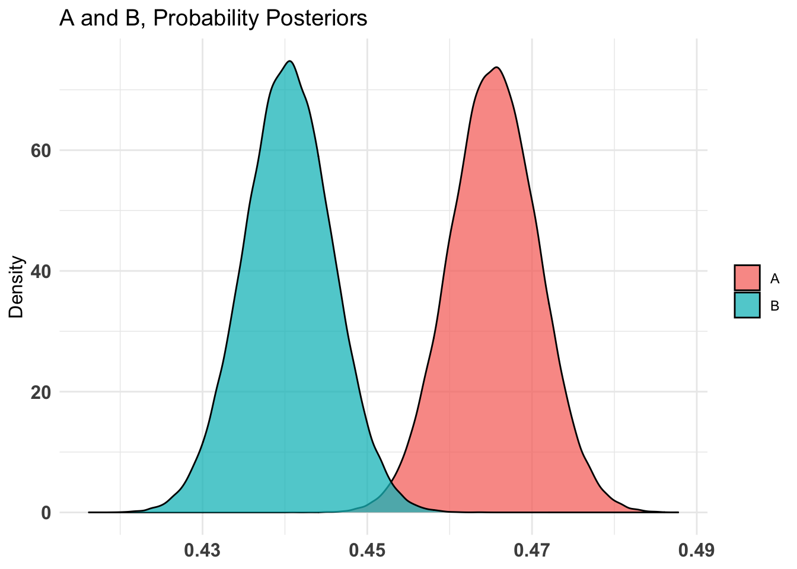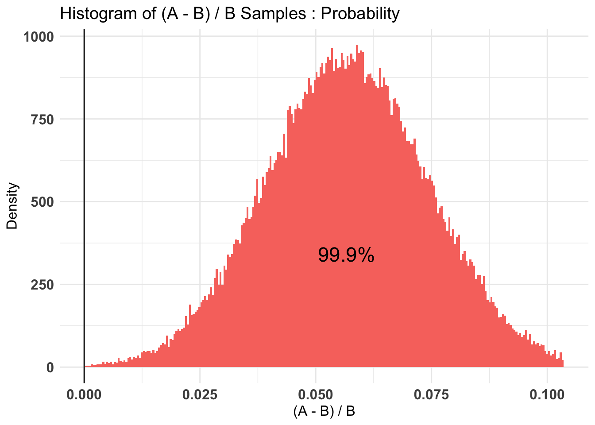
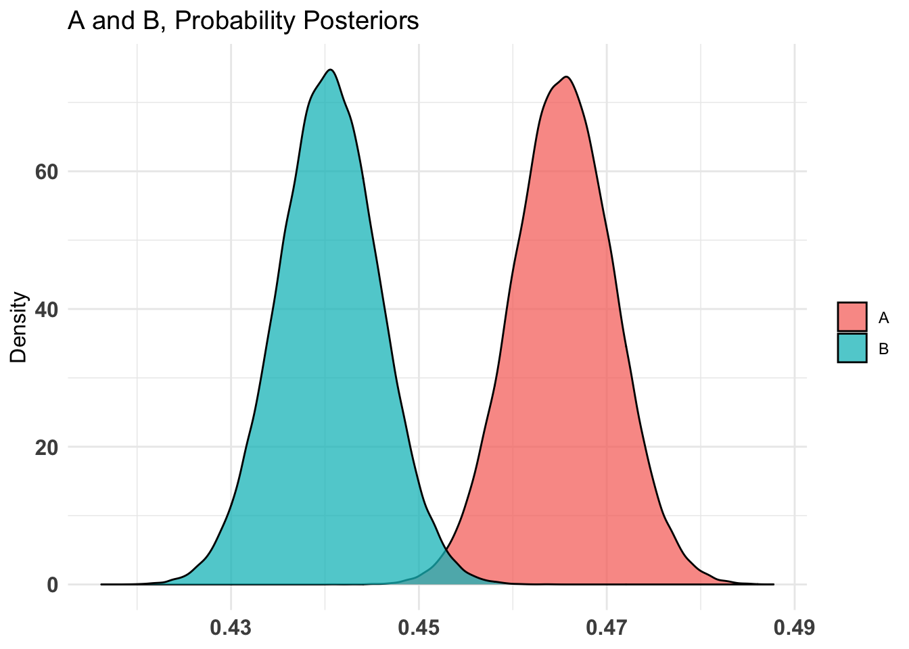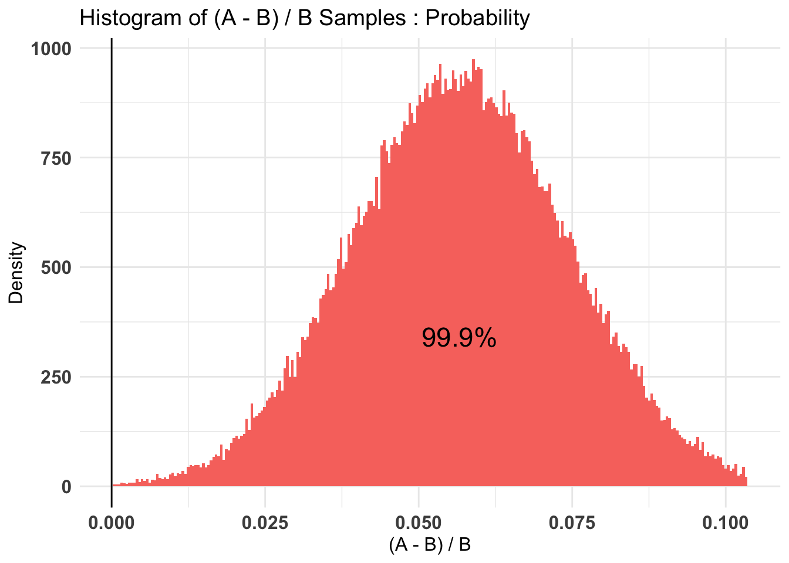
#WTF -- I need to advance this by command prompt!? #AB1 <- bayesTest(oftw_21_22_db_don_persons$d_don_ot[trea], B_binom, priors = c('alpha' = 65, 'beta' = 200), n_samples = 1e5, distribution = 'bernoulli')
‘Some donation’ by treatment (only for those who opened, otherwise donations are surely undercounted for Emotion treatment)
oftw_21_22_db_don_persons %>% tabyl(treat_emotion, d_don)
## Error in `dplyr::select()`:
## ! Can't subset columns that don't exist.
## x Column `treat_emotion` doesn't exist.empir_prior <- c('alpha' = sum(oc_mat_r$tot_d_don), 'beta' = sum(oc_mat_r$tot_d_open)) ( don_by_treat_opened_fit <- bayes.prop.test(oc_mat_r$tot_d_don, oc_mat_r$tot_d_open, cred.mass = 0.80) # 80% credible interval for decision-making purposes )
##
## Bayesian First Aid proportion test
##
## data: oc_mat_r$tot_d_don out of oc_mat_r$tot_d_open
## number of successes: 266, 222
## number of trials: 1405, 1190
## Estimated relative frequency of success [80% credible interval]:
## Group 1: 0.19 [0.18, 0.20]
## Group 2: 0.19 [0.17, 0.20]
## Estimated group difference (Group 1 - Group 2):
## 0 [-0.017, 0.022]
## The relative frequency of success is larger for Group 1 by a probability
## of 0.571 and larger for Group 2 by a probability of 0.429 .plot(don_by_treat_opened_fit)

#same with AB package # Fit bernoulli test don_by_treat_AB <- bayesAB::bayesTest( oftw_mc_db_openers$d_don[oftw_mc_db_openers$treat_emotion==0], oftw_mc_db_openers$d_don[oftw_mc_db_openers$treat_emotion==1], priors = unif_prior, distribution = 'bernoulli') don_by_treat_AB_empir <- bayesAB::bayesTest( oftw_mc_db_openers$d_don[oftw_mc_db_openers$treat_emotion==0], oftw_mc_db_openers$d_don[oftw_mc_db_openers$treat_emotion==1], priors = empir_prior, distribution = 'bernoulli') plot(don_by_treat_AB)
 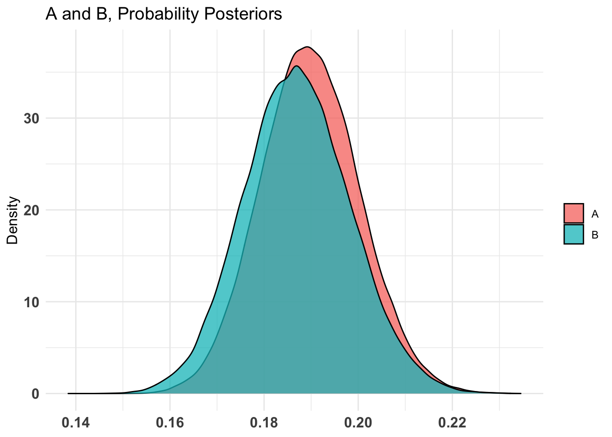
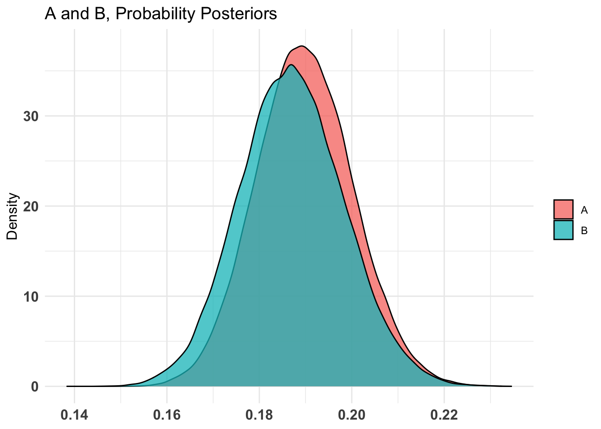
plot(don_by_treat_AB_empir)

 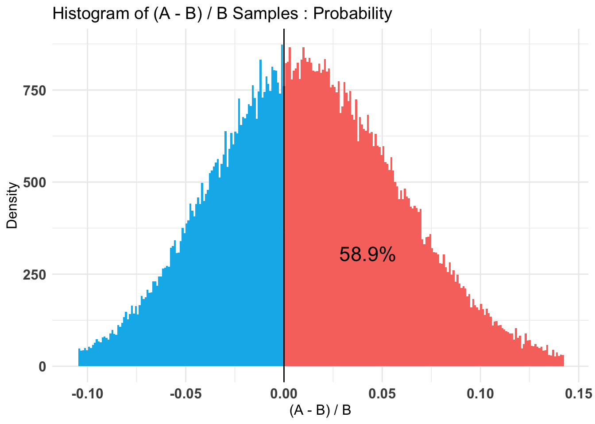
Thus we put 80% probability on the difference between the donation rates being no more than (hard-coded) .023/.19 = 12% in either direction. Note that this is not terribly narrowly bounded.
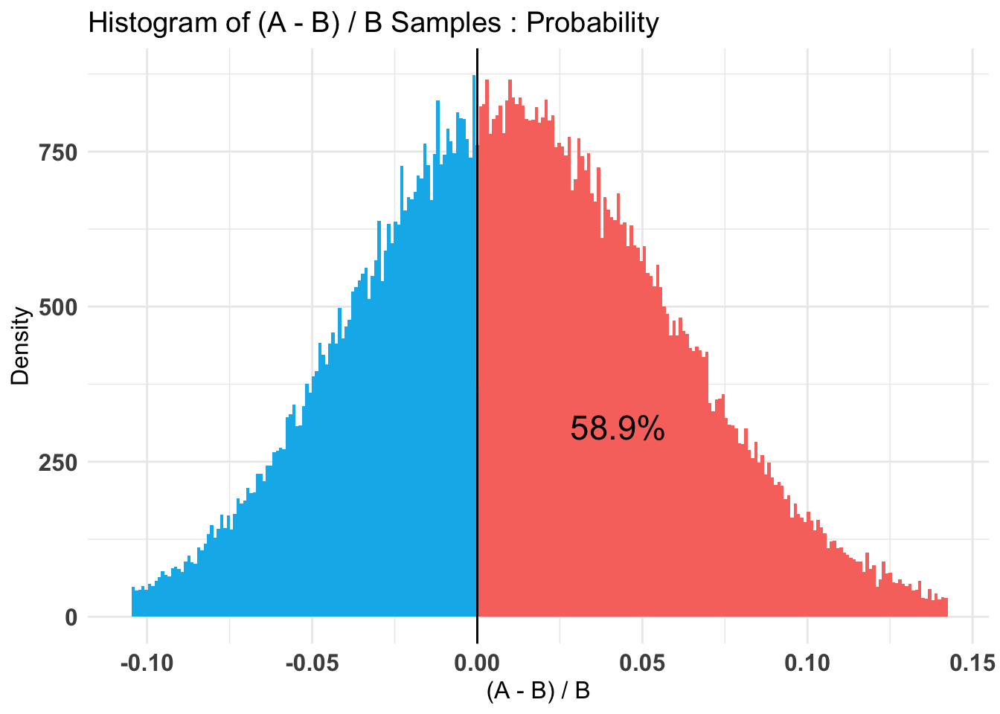
Thus we put 80% probability on the difference between the donation rates being no more than (hard-coded) .023/.19 = 12% in either direction. Note that this is not terribly narrowly bounded.
Next, for one-time donations only; again as a share of opens
( don_ot_by_treat_opened_fit <- bayes.prop.test(oc_mat_r$tot_d_don_ot, oc_mat_r$tot_d_open, cred.mass = 0.80) # 80% credible interval for decision-making purposes )
##
## Bayesian First Aid proportion test
##
## data: oc_mat_r$tot_d_don_ot out of oc_mat_r$tot_d_open
## number of successes: 15, 11
## number of trials: 1405, 1190
## Estimated relative frequency of success [80% credible interval]:
## Group 1: 0.011 [0.0076, 0.015]
## Group 2: 0.0098 [0.0060, 0.013]
## Estimated group difference (Group 1 - Group 2):
## 0 [-0.0037, 0.0065]
## The relative frequency of success is larger for Group 1 by a probability
## of 0.634 and larger for Group 2 by a probability of 0.366 .empir_prior <- c('alpha' = sum(oc_mat_r$tot_d_don_ot), 'beta' = sum(oc_mat_r$tot_d_open)) #same with AB package # Fit bernoulli test don_ot_by_treat_AB <- bayesAB::bayesTest( oftw_mc_db_openers$d_don_ot[oftw_mc_db_openers$treat_emotion==0], oftw_mc_db_openers$d_don_ot[oftw_mc_db_openers$treat_emotion==1], priors = unif_prior, distribution = 'bernoulli') don_ot_by_treat_AB_empir <- bayesAB::bayesTest( oftw_mc_db_openers$d_don_ot[oftw_mc_db_openers$treat_emotion==0], oftw_mc_db_openers$d_don_ot[oftw_mc_db_openers$treat_emotion==1], priors = empir_prior, distribution = 'bernoulli') plot(don_ot_by_treat_AB)
 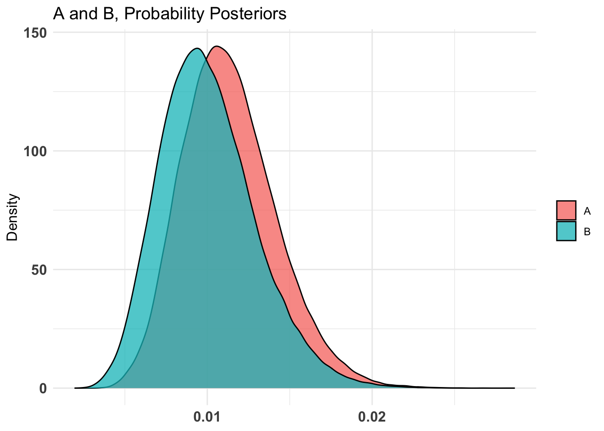
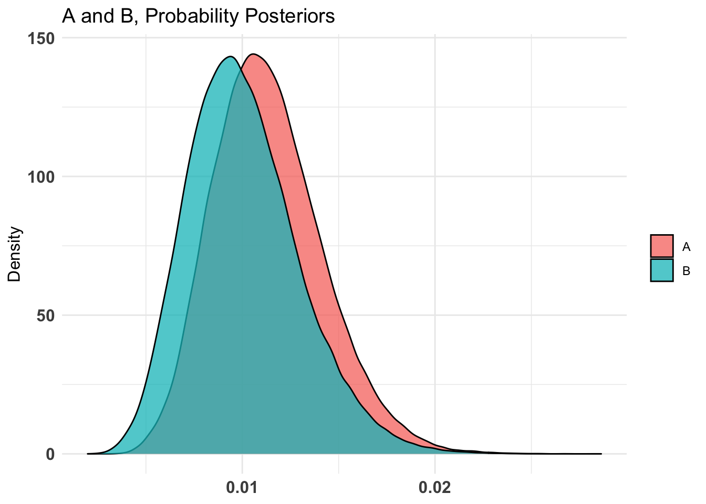
plot(don_ot_by_treat_AB_empir)
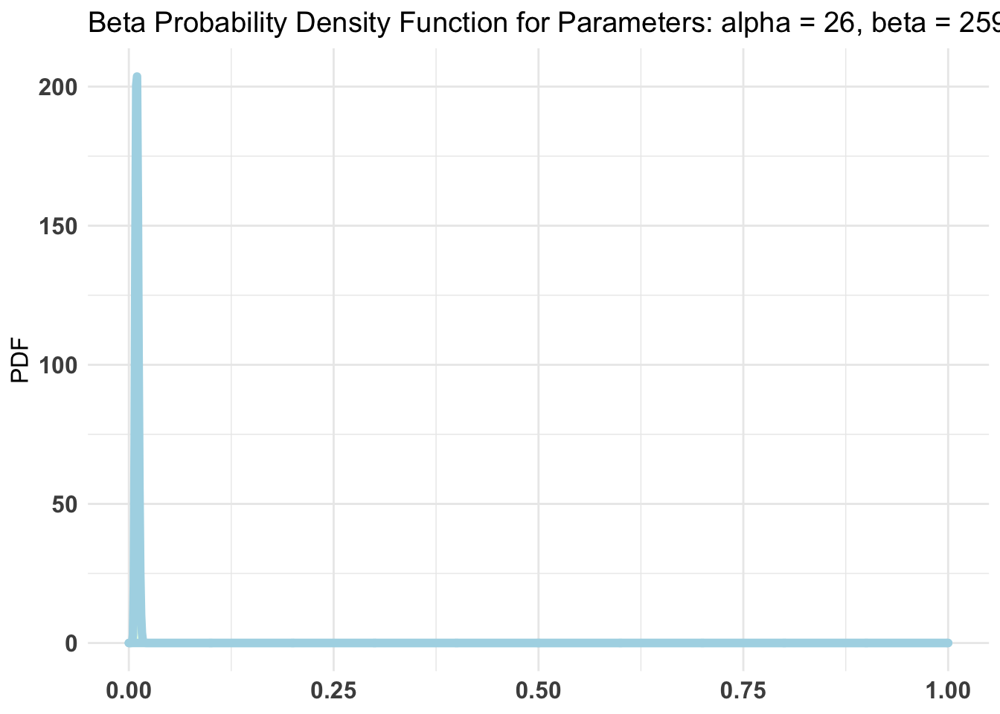

don_ot_by_treat_AB %>% summary(credInt=0.9)
## Quantiles of posteriors for A and B:
##
## $Probability
## $Probability$A
## 0% 25% 50% 75% 100%
## 0.002715801 0.009346799 0.011131270 0.013121584 0.028621698
##
## $Probability$B
## 0% 25% 50% 75% 100%
## 0.001978320 0.008007009 0.009798477 0.011841058 0.026721206
##
##
## --------------------------------------------
##
## P(A > B) by (0)%:
##
## $Probability
## [1] 0.62982
##
## --------------------------------------------
##
## Credible Interval on (A - B) / B for interval length(s) (0.9) :
##
## $Probability
## 5% 95%
## -0.3945133 1.1704637
##
## --------------------------------------------
##
## Posterior Expected Loss for choosing A over B:
##
## $Probability
## [1] 0.12218don_ot_by_treat_AB_lift_int80 <- don_ot_by_treat_AB %>% summary(credInt=0.8) don_ot_by_treat_AB_lift_int80_empir <- don_ot_by_treat_AB_empir %>% summary(credInt=0.8)
80% credible intervals with the uniform prior for the ‘lift’ of Impact relative to Emotion are
-0.303, 0.877
and for the empirically informed (but symmetric prior):
-0.214, 0.402
(Hard-coded) Here there is just a trace of suggestive evidence that the emotion treatment performed worse. But even our 80% bounds are very wide.
For ‘Squarespace donations only’; these are the donations that plausibly came from the email. First as a share of opens for each treatment :
empir_prior <- c('alpha' = sum(oc_mat_r$tot_d_don_ss), 'beta' = sum(oc_mat_r$tot_d_open)) ( don_ss_by_treat_opened_fit <- bayes.prop.test(oc_mat_r$tot_d_don_ss, oc_mat_r$tot_d_open, cred.mass = 0.80) # 80% credible interval for decision-making purposes )
##
## Bayesian First Aid proportion test
##
## data: oc_mat_r$tot_d_don_ss out of oc_mat_r$tot_d_open
## number of successes: 8, 9
## number of trials: 1405, 1190
## Estimated relative frequency of success [80% credible interval]:
## Group 1: 0.0061 [0.0036, 0.0087]
## Group 2: 0.0081 [0.0048, 0.011]
## Estimated group difference (Group 1 - Group 2):
## 0 [-0.0062, 0.0022]
## The relative frequency of success is larger for Group 1 by a probability
## of 0.27 and larger for Group 2 by a probability of 0.73 .#same with AB package # Fit bernoulli test don_ss_by_treat_AB <- bayesAB::bayesTest( oftw_mc_db_openers$d_don_ss[oftw_mc_db_openers$treat_emotion==0], oftw_mc_db_openers$d_don_ss[oftw_mc_db_openers$treat_emotion==1], priors = unif_prior, distribution = 'bernoulli') don_ss_by_treat_AB_empir <- bayesAB::bayesTest( oftw_mc_db_openers$d_don_ss[oftw_mc_db_openers$treat_emotion==0], oftw_mc_db_openers$d_don_ss[oftw_mc_db_openers$treat_emotion==1], priors = empir_prior, distribution = 'bernoulli') plot(don_ss_by_treat_AB)

 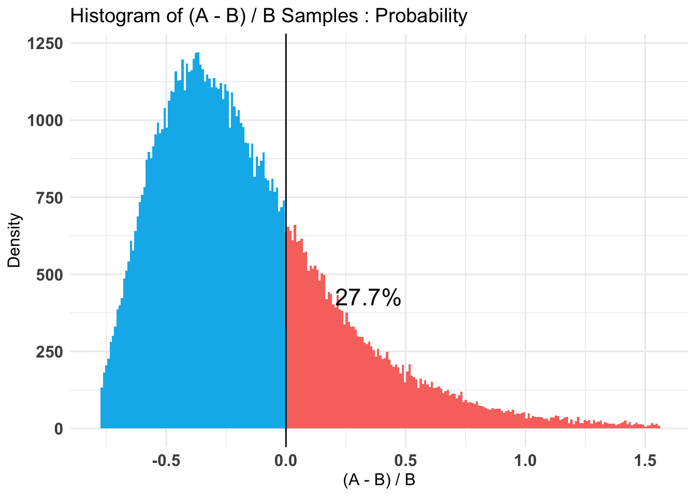
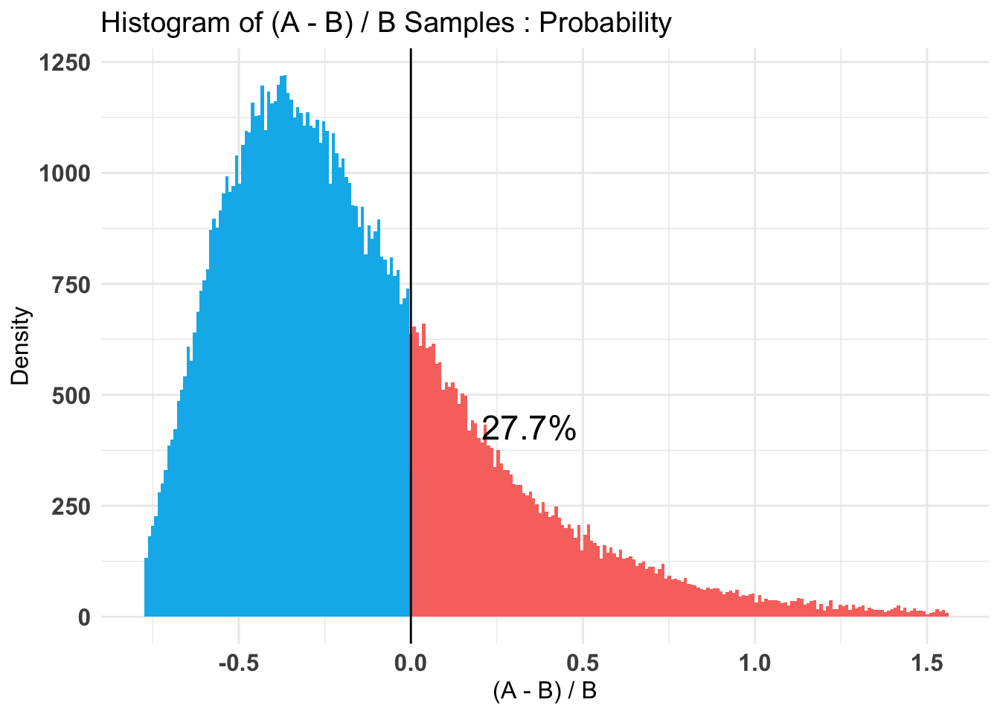
plot(don_ss_by_treat_AB_empir)
 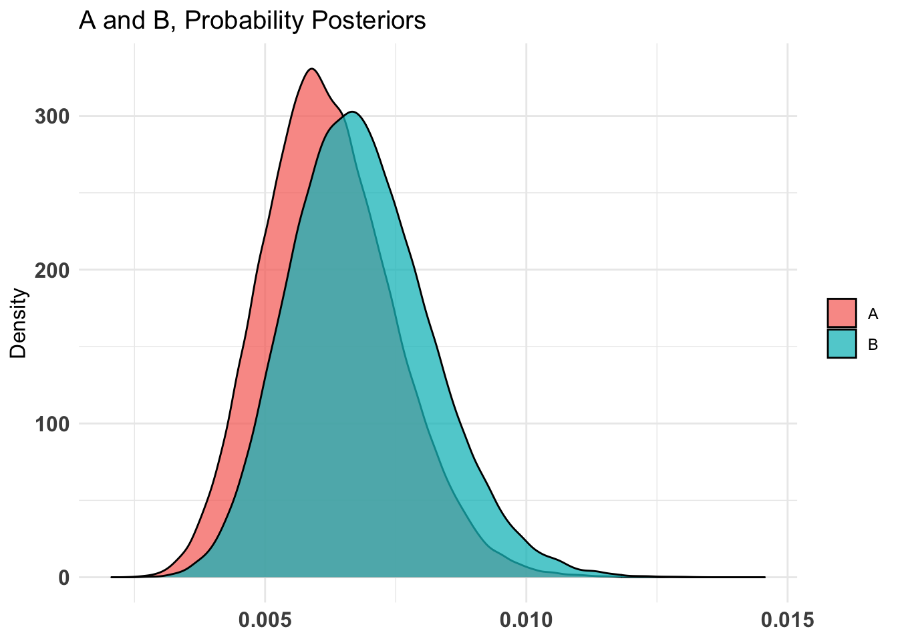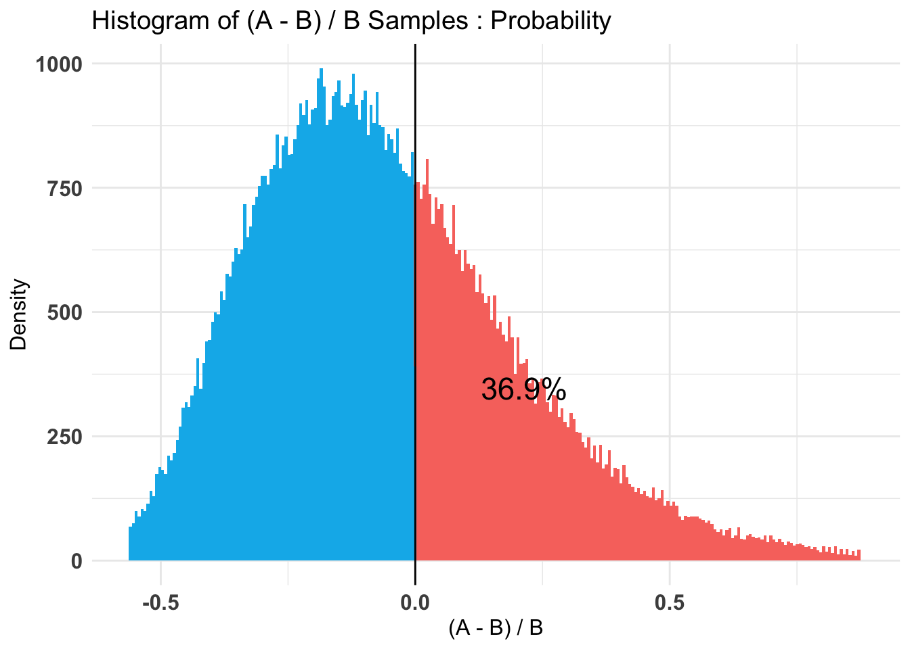
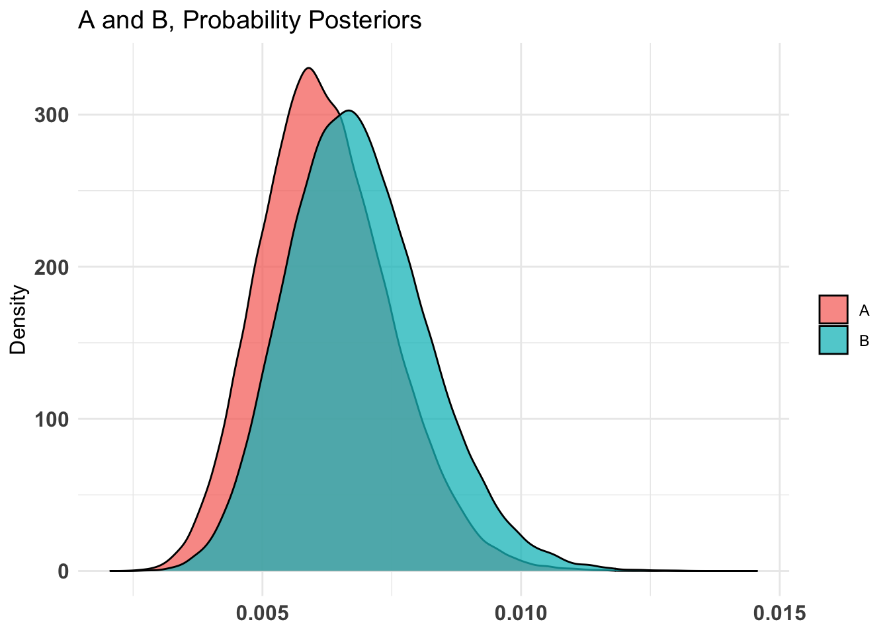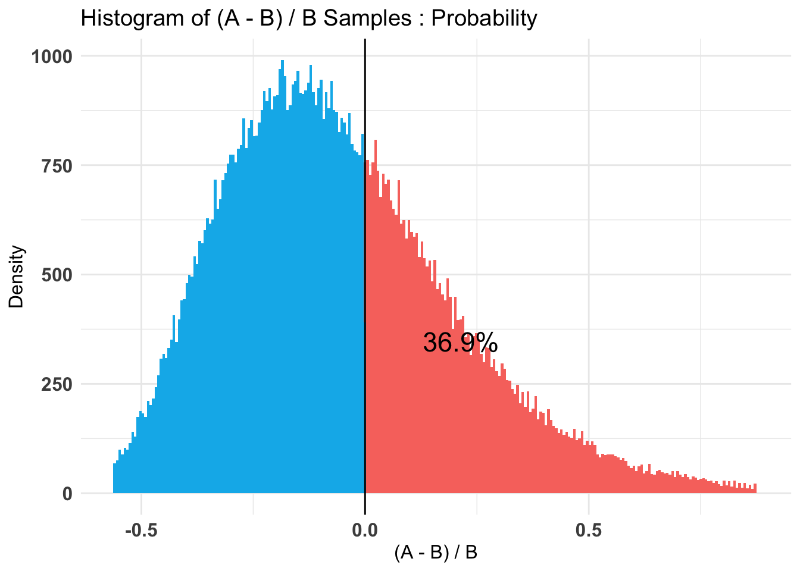
don_ss_by_treat_AB %>% summary(credInt=0.9)
## Quantiles of posteriors for A and B:
##
## $Probability
## $Probability$A
## 0% 25% 50% 75% 100%
## 0.0009951672 0.0048674196 0.0061674608 0.0076713743 0.0192364229
##
## $Probability$B
## 0% 25% 50% 75% 100%
## 0.001473780 0.006486365 0.008102473 0.009965906 0.025915675
##
##
## --------------------------------------------
##
## P(A > B) by (0)%:
##
## $Probability
## [1] 0.27719
##
## --------------------------------------------
##
## Credible Interval on (A - B) / B for interval length(s) (0.9) :
##
## $Probability
## 5% 95%
## -0.6524174 0.6352614
##
## --------------------------------------------
##
## Posterior Expected Loss for choosing A over B:
##
## $Probability
## [1] 0.5379195don_ss_by_treat_AB_lift_int80 <- don_ss_by_treat_AB %>% summary(credInt=0.8) don_ss_by_treat_AB_lift_int80_empir <- don_ss_by_treat_AB_empir %>% summary(credInt=0.8)
80% credible intervals with the uniform prior for the ‘lift’ of Impact relative to Emotion are
-0.585, 0.379
and for the empirically informed (but symmetric prior):
-0.367, 0.301
(Hard-coded) Again, even our 80% bounds are very wide.
Finally, we consider the above as a share of total emails sent, allowing that ‘opens’ is non-random,
… and also implicitly assuming that the only impact of these treatments could be on the Squarespace donations made by someone who did open the email.
( don_ss_by_treat_opened_fit_all <- bayes.prop.test(oc_mat_r$tot_d_don_ss, assigned_emails, cred.mass = 0.80) # 80% credible interval for decision-making purposes )
##
## Bayesian First Aid proportion test
##
## data: oc_mat_r$tot_d_don_ss out of assigned_emails
## number of successes: 8, 9
## number of trials: 2000, 2000
## Estimated relative frequency of success [80% credible interval]:
## Group 1: 0.0043 [0.0024, 0.0061]
## Group 2: 0.0049 [0.0027, 0.0066]
## Estimated group difference (Group 1 - Group 2):
## 0 [-0.0034, 0.0021]
## The relative frequency of success is larger for Group 1 by a probability
## of 0.4 and larger for Group 2 by a probability of 0.6 .# #same with AB package empir_prior <- c('alpha' = sum(oc_mat_r$tot_d_don_ss), 'beta' = sum(assigned_emails)) # Fit Bernoulli test don_ss_by_treat_all_AB <- bayesAB::bayesTest( oftw_mc_db_assigned$d_don_ss[oftw_mc_db_assigned$treat_emotion==0], oftw_mc_db_assigned$d_don_ss[oftw_mc_db_assigned$treat_emotion==1], priors = unif_prior, distribution = 'bernoulli') don_ss_by_treat_all_AB_empir <- bayesAB::bayesTest( oftw_mc_db_assigned$d_don_ss[oftw_mc_db_assigned$treat_emotion==0], oftw_mc_db_assigned$d_don_ss[oftw_mc_db_assigned$treat_emotion==1], priors = empir_prior, distribution = 'bernoulli') plot(don_ss_by_treat_all_AB)
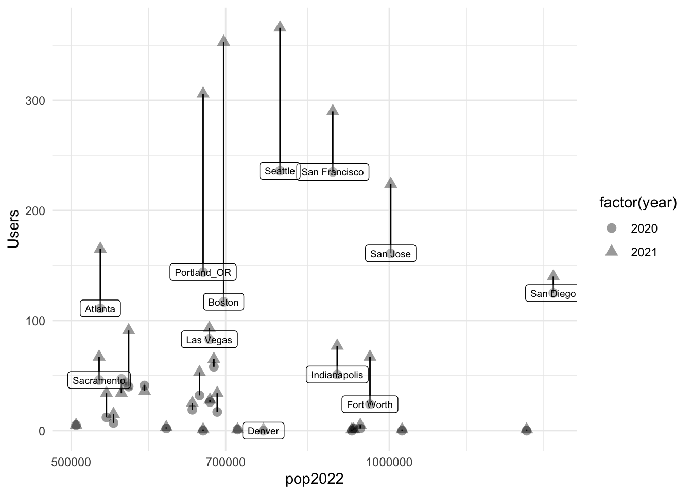 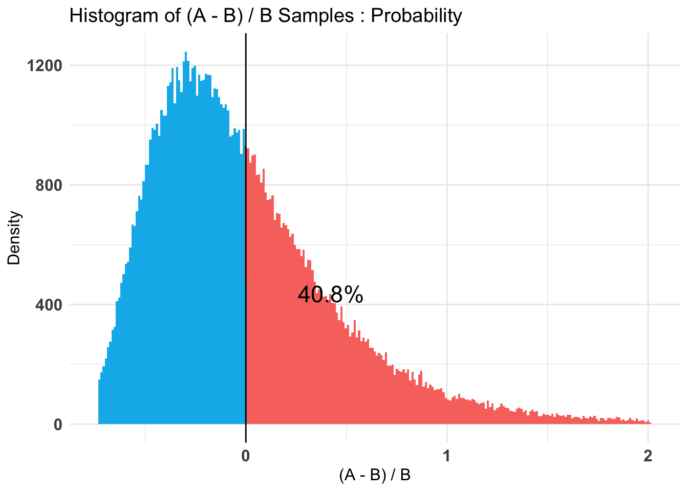
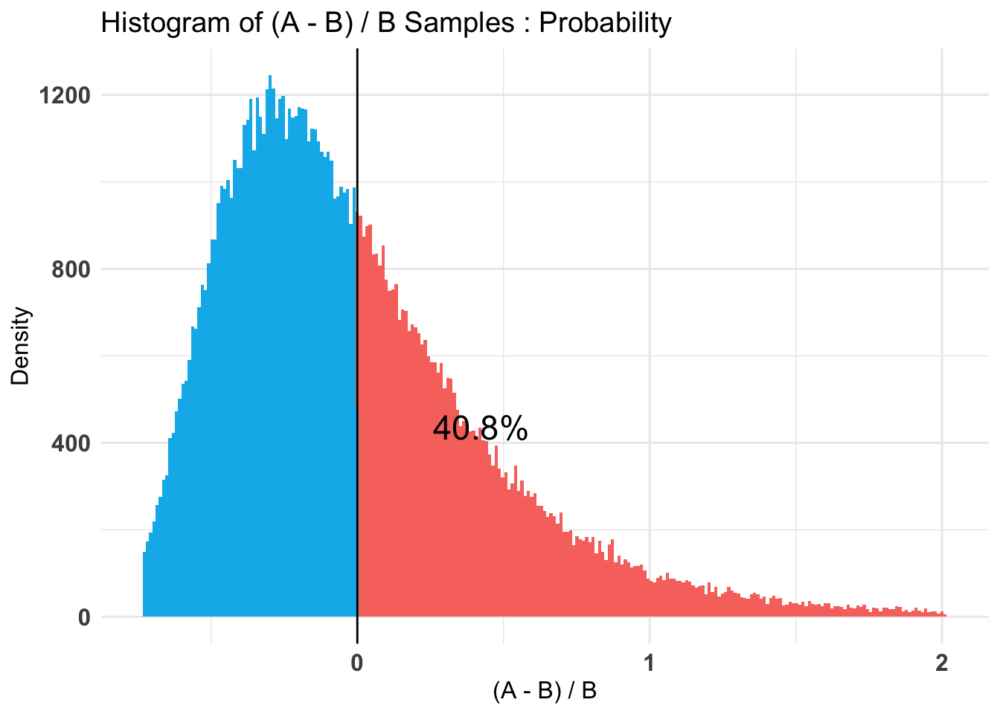
plot(don_ss_by_treat_all_AB_empir)
 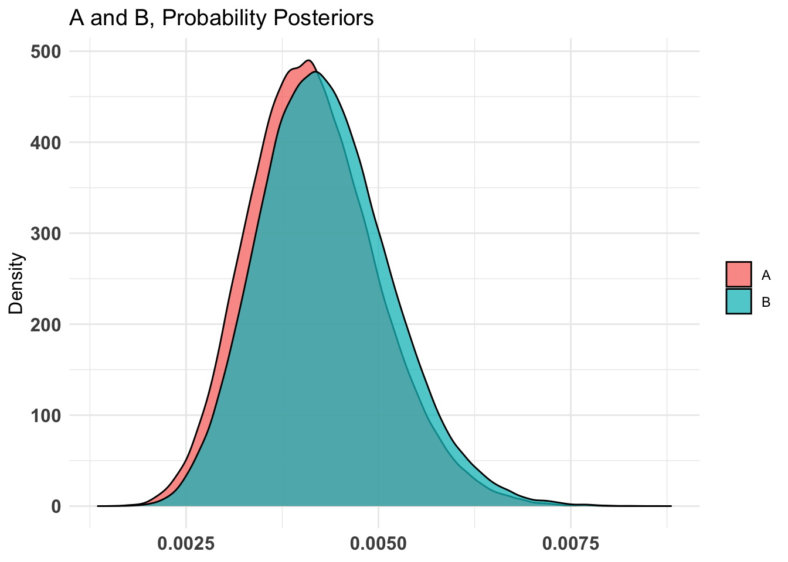
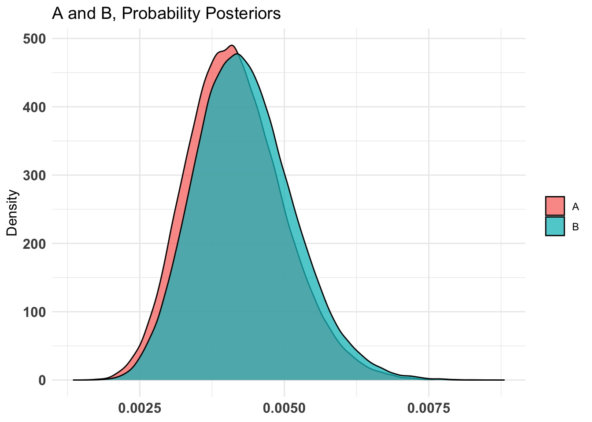
don_ss_by_treat_all_AB %>% summary(credInt=0.9)
## Quantiles of posteriors for A and B:
##
## $Probability
## $Probability$A
## 0% 25% 50% 75% 100%
## 0.0006591401 0.0034230099 0.0043367467 0.0053950450 0.0139389081
##
## $Probability$B
## 0% 25% 50% 75% 100%
## 0.0008503472 0.0038631114 0.0048301295 0.0059442783 0.0137935894
##
##
## --------------------------------------------
##
## P(A > B) by (0)%:
##
## $Probability
## [1] 0.40769
##
## --------------------------------------------
##
## Credible Interval on (A - B) / B for interval length(s) (0.9) :
##
## $Probability
## 5% 95%
## -0.5874132 0.9230001
##
## --------------------------------------------
##
## Posterior Expected Loss for choosing A over B:
##
## $Probability
## [1] 0.3535216don_ss_by_treat_all_AB_lift_int80 <- don_ss_by_treat_all_AB %>% summary(credInt=0.8) don_ss_by_treat_all_AB_lift_int80_empir <- don_ss_by_treat_all_AB_empir %>% summary(credInt=0.8)
80% credible intervals with the uniform prior for the ‘lift’ of Impact relative to Emotion are
-0.507, 0.621
and for the empirically informed (but symmetric prior):
-0.329, 0.379
Hard-coded: Here there is almost no evidence in either direction. However, our 80% credible intervals remain wide.
Unfortunately, this experiment proved to be underpowered, at least for the donation outcome.
But what about clicks on the ‘donation link?’ This could arguably be seen as a measure of ‘desire and intention to donate,’ and thus might be a more fine-grained and less noisy measure, improving our statistical power.
Some quick crosstabs (here as a share of opens)
( donclick_by_treat <- oftw_mc_db %>% filter(!is.na(treat_emotion)) %>% tabyl(treat_emotion, d_click_don_link) %>% adorn_percentages("row") %>% adorn_pct_formatting() %>% adorn_ns() %>% adorn_title() %>% kable(caption ="Click on donation link by treatment; all opened emails") %>% kable_styling(latex_options = "scale_down") )
| d_click_don_link | ||
|---|---|---|
| treat_emotion | FALSE | TRUE |
| 0 | 97.9% (1376) | 2.1% (29) |
| 1 | 95.3% (1134) | 4.7% (56) |
If this is our metric, it only seems fair to take into account ‘whether they opened the email’ as part of this effect. Thus, considering clicks as a share of total emails sent…
( click_don_by_treat_opened_fit <- bayes.prop.test(oc_mat_r$tot_d_click_don_link, assigned_emails, cred.mass = 0.95) # 80% credible interval for decision-making purposes )
##
## Bayesian First Aid proportion test
##
## data: oc_mat_r$tot_d_click_don_link out of assigned_emails
## number of successes: 29, 56
## number of trials: 2000, 2000
## Estimated relative frequency of success [95% credible interval]:
## Group 1: 0.015 [0.0098, 0.021]
## Group 2: 0.028 [0.022, 0.036]
## Estimated group difference (Group 1 - Group 2):
## -0.01 [-0.022, -0.0039]
## The relative frequency of success is larger for Group 1 by a probability
## of 0.001 and larger for Group 2 by a probability of 0.999 .plot(click_don_by_treat_opened_fit)

#same with AB package empir_prior <- c('alpha' = sum(oc_mat_r$tot_d_click_don_link), 'beta' = sum(assigned_emails)) # Fit bernoulli test don_click_by_treat_all_AB <- bayesAB::bayesTest( oftw_mc_db_assigned$d_click_don_link[oftw_mc_db_assigned$treat_emotion==0], oftw_mc_db_assigned$d_click_don_link[oftw_mc_db_assigned$treat_emotion==1], priors = unif_prior, distribution = 'bernoulli') don_click_by_treat_all_AB_empir <- bayesAB::bayesTest( oftw_mc_db_assigned$d_click_don_link[oftw_mc_db_assigned$treat_emotion==0], oftw_mc_db_assigned$d_click_don_link[oftw_mc_db_assigned$treat_emotion==1], priors = empir_prior, distribution = 'bernoulli') plot(don_click_by_treat_all_AB)

 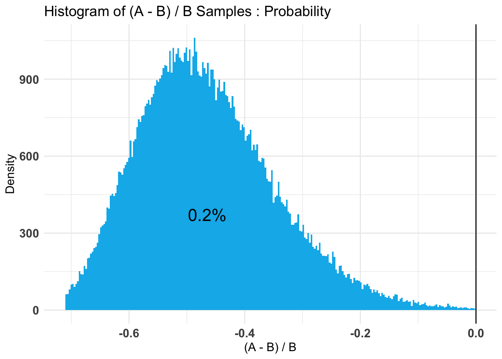
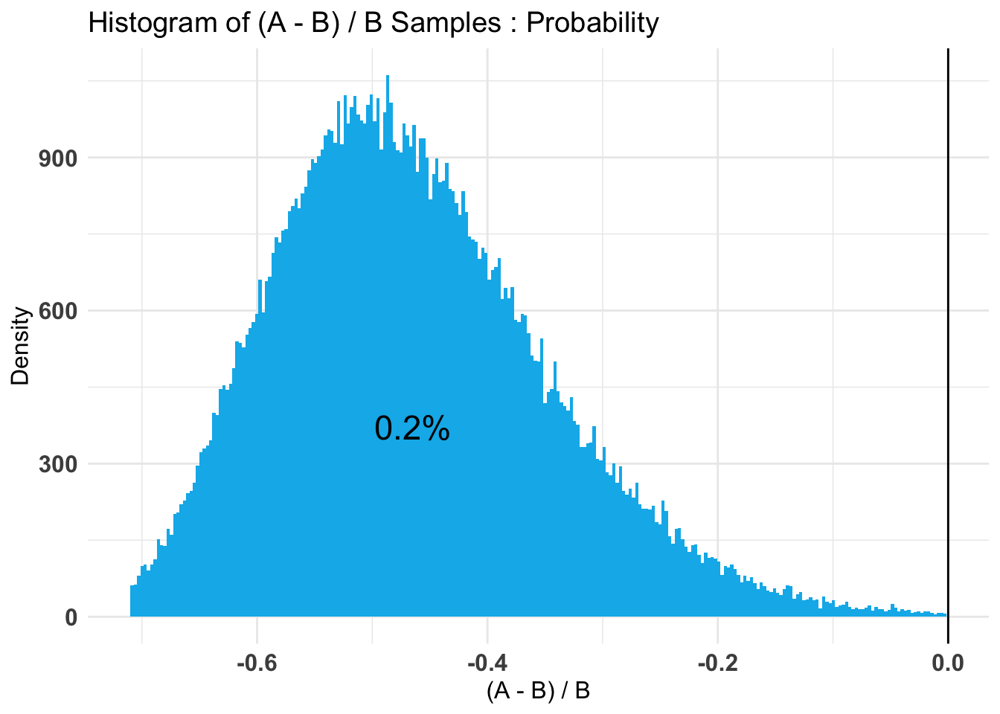
plot(don_click_by_treat_all_AB_empir)
 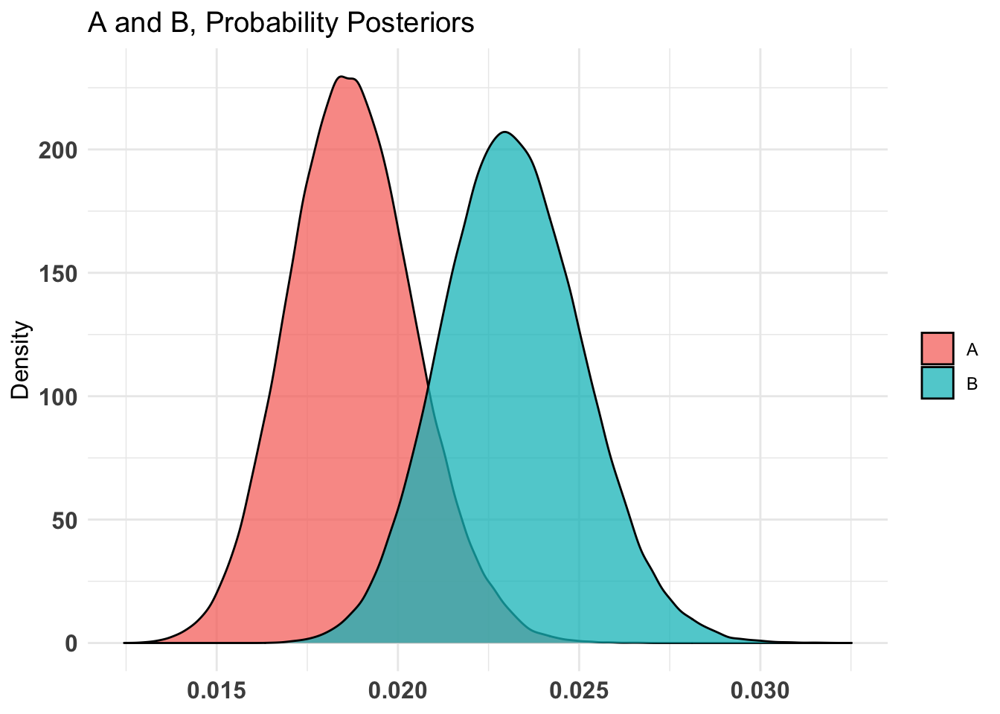
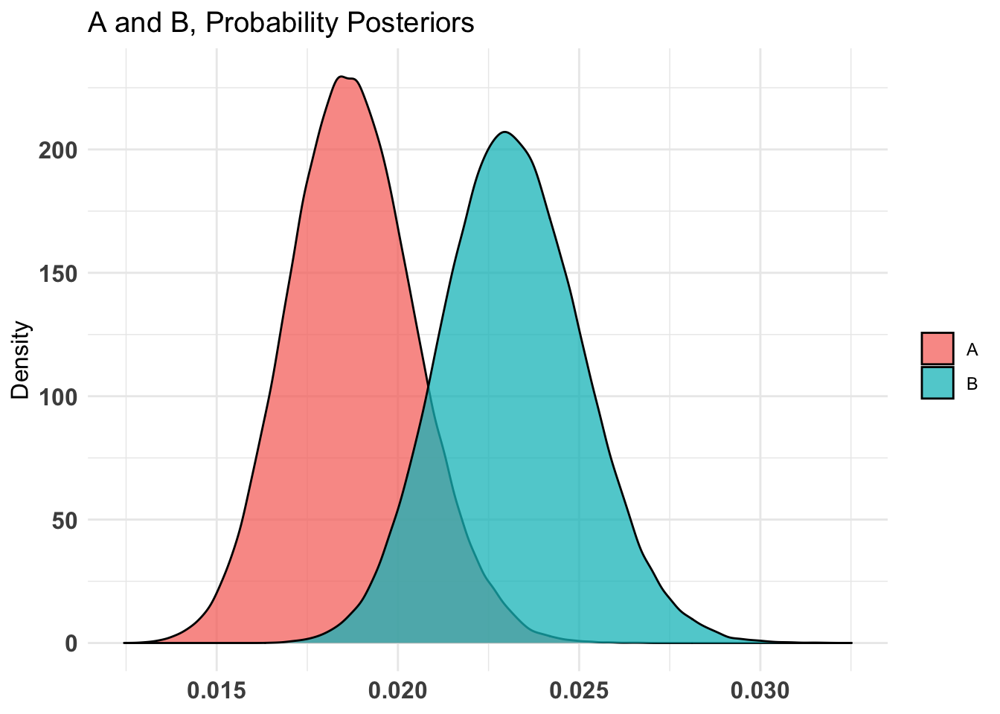
don_click_by_treat_all_AB %>% summary(credInt=0.9)
## Quantiles of posteriors for A and B:
##
## $Probability
## $Probability$A
## 0% 25% 50% 75% 100%
## 0.005594249 0.013065566 0.014804312 0.016725027 0.030814819
##
## $Probability$B
## 0% 25% 50% 75% 100%
## 0.01450641 0.02590849 0.02833368 0.03088321 0.04743730
##
##
## --------------------------------------------
##
## P(A > B) by (0)%:
##
## $Probability
## [1] 0.00159
##
## --------------------------------------------
##
## Credible Interval on (A - B) / B for interval length(s) (0.9) :
##
## $Probability
## 5% 95%
## -0.6408927 -0.2465840
##
## --------------------------------------------
##
## Posterior Expected Loss for choosing A over B:
##
## $Probability
## [1] 0.9666799don_click_by_treat_all_AB_lift_int80 <- don_click_by_treat_all_AB %>% summary(credInt=0.8) don_click_by_treat_all_AB_lift_int80_empir <- don_click_by_treat_all_AB_empir %>% summary(credInt=0.8)
80% credible intervals with the uniform prior for the ‘lift’ of Impact relative to Emotion are
-0.610, -0.304
and for the empirically informed (but symmetric prior):
-0.3117, -0.0527
(Hard-coded)
There is fairly strong evidence that the emotion email lead to a higher rate of clicks on the donation link; note that this even is in spite of the lower rate of email opens.
This suggests (IMO) it is worth testing this further.
1.6.2 Redoing a bunch of stuff manually
First, some building blocks;
the probability distribution over the absolute value of differences between two binomial random variables
Adapting formulas from Stackexchange post discussion
Defining their code for this function:
modBin <- dbinom #DR: I just do this renaming here for consistency with the rest ... but the modBin they defined was redundant as it's already built ins diffBin <- function(z, n1, p1, n2, p2){ prob <- 0 if (z>=0){ for (i in 1:n1){ prob <- prob + modBin(i+z, n1, p1) * modBin(i, n2, p2) } } else { for (i in 1:n2){ prob<-prob+modBin(i+z, n1, p1)*modBin(i, n2, p2) } } return(prob) }
We generate an alternate version to cover ‘differences in one direction, i.e., but ’probability of observing (d1-d2)/(n1+n2) share more of d1 responses than d2 responses given sample sizes n1 and n2… over a range of true probabilities p1 and p2’
the probability distribution for differences between two binomial random variables in one direction
For the present case
Hard-coded notes…
::: {.foldable}
n1 <- oc_mat_r$tot_d_open[1] n2 <- oc_mat_r$tot_d_open[2] d1 <- oc_mat_r$tot_d_click_don_link[1] d2 <- oc_mat_r$tot_d_click_don_link[2] z <- d1-d2 #impact minus emotion
Computation for a few ‘ad-hoc cases’ (later explore the space with vectors of values)
- Suppose truly equal incidence, at the mean level
p1 <- (d1+d2)/(n1+n2) p2 <- p1 ( db_0 <- diffBin(z, n1, p1, n2, p2) )
## [1] 0.00003782046This implies there is a 0.00378% chance of getting this exact difference of +-27 incidence(s) between the treatments (in one direction), if the true incidence rates were equal.
Let’s plot this for a range of ‘incidence rate differences’ in this region. (Sorry, using the traditional plot, ggplot is better).
s <- seq(-10*z, 10*z) p<-sapply(s, function(z) diffBin(z, n1, p1, n2, p2)) plot(s,p)
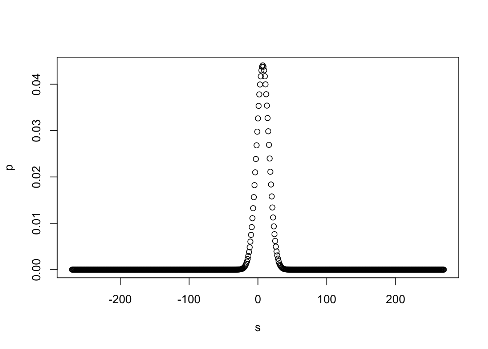
We see a large likelihood of values in the range of the +-27 difference observed, and a low likelihood of a difference of 10 or more in either direction.
1.6.3 Adaptation: ‘of this magnitude or smaller’
ltmag_diffBin <- function(z, n1, p1, n2, p2){ prob <- 0 z_n <- -z #negative value for (i in z_n:z){ #sum for all integer differences between observed value and its negative, inclusive prob <- prob + diffBin(i, n1, p1, n2, p2) } return(prob) }
Now, a similar computation as above, but for ‘a difference this big or smaller in magnitude’:
( mag_db_0 <- ltmag_diffBin(z, n1, p1, n2, p2) )
## [1] 0.9876964This implies there is a 98.8% chance of getting a difference no larger than this one in magnitude of +/–27 incidences between the treatments if the true incidence rates were equal.
And finally, what we were looking for: the chance of ‘a difference this small or smaller’ as a function of the true difference…
(Think about: should we do this for ‘a difference in the same direction’ instead?)
Set up an arbitrary vector of ‘true differences’
Below, I plot
Y-axis: ’how likely would be a difference in donations ‘as small or smaller in magnitude’” than we see in the data against…
X-axis: if the “true difference in incidence rates” were of these magnitudes
(Note: this should cover ‘a difference in either direction’; the probability of a difference in the direction we do see is obviously somewhat smaller)
options(scipen=999) B <- c(1, 1.5, 2, 2.5, 3) p1 <- rep((d1+d2)/(n1+n2), length(B)) p2 <- p1*B as.list(ltmag_diffBin(z, n1, p1, n2, p2)*100) %>% format(digits=3, scientific=FALSE)
## [1] "98.8" "93.4" "34.2" "1.88" "0.0167"probmag <- ltmag_diffBin(z, n1, p1, n2, p2) #qplot(B, probmag, log = "x", xlab = "True relative incidence", ylab ="Prob. of difference this small") ( probmag_plot <- ggplot() + aes(x=B, y=probmag) + geom_point() + scale_x_continuous(trans='log2') + ylim(0,1) + xlab("True relative incidence rate") + ylab("Prob. diff. as small as obsd") )
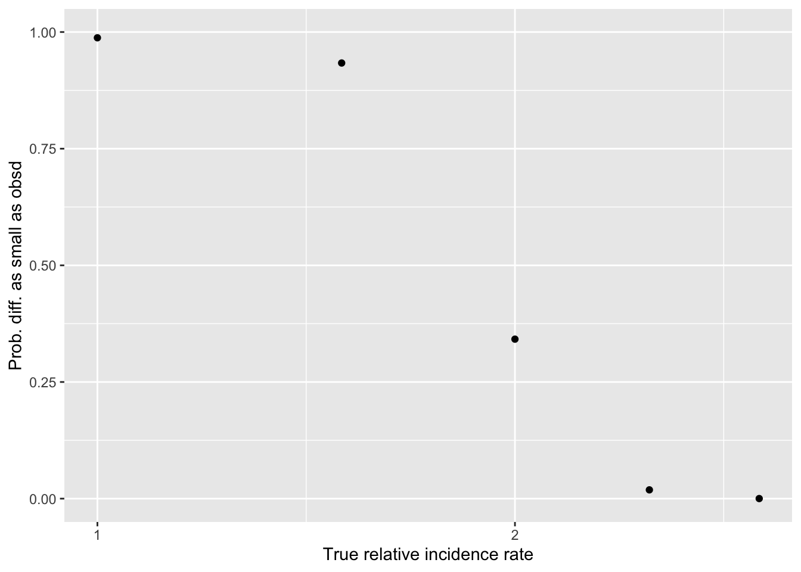
Hard-coded takeaways 15 Dec 2021 :
Our data is consistent with ‘no difference’ (of course) … but its also consistent with ‘a fairly large difference in incidence’
E.g., even if one treatment truly lead to ‘twice as many donations as the other,’ we still have a 20% chance of seeing a differences as small as the one we see (of 8 versus 6)
We can reasonably ‘rule out’ differences of maybe 2.5x or greater
Main point: given the rareness of donations in this context, our sample size doesn’t let us make very strong conclusions in either directions … at least not yet. I hope that combined with other evidence, we will be able to infer more
1.6.4 Quick redo assuming equal shares recieved each email, and treating ‘email reciepts as denom’
Approx 4000 total emails sent?
For squarespace
n1 <- 2000 n2 <- 2000 d1 <- 10 d2 <- 9 z <- d1-d2 B <- c(1/3, 1/2.5, 1/2, 1/1.5, 1, 1.5, 2, 2.5, 3) p1 <- rep((d1+d2)/(n1+n2), length(B)) p2 <- p1*B ( mag_db_0_ss <- ltmag_diffBin(z, n1, p1, n2, p2) )
## [1] 0.071197896 0.100275616 0.147727269 0.220724651 0.272100392 0.154218060 0.046306831
## [8] 0.009174658 0.001345637probmag_ss <- ltmag_diffBin(z, n1, p1, n2, p2) ( probmag_plot_ss <- ggplot() + aes(x=B, y=probmag_ss) + geom_point() + scale_x_continuous(trans='log2') + ylim(0,.51) + xlab("True relative incidence rate") + ylab("Prob. diff. as small as obsd") )

#note that it is not symmetric bc (I think) a very low incidence on one side makes particular large observed proportional differences more likely
For all one-time donations
n1 <- 2000 n2 <- 2000 d1 <- 15 d2 <- 12 z <- d1-d2 B <- c(1/3, 1/2.5, 1/2, 1/1.5, 1, 1.5, 2, 2.5, 3) p1 <- rep((d1+d2)/(n1+n2), length(B)) p2 <- p1*B ( mag_db_0 <- ltmag_diffBin(z, n1, p1, n2, p2) )
## [1] 0.0922168538 0.1395427545 0.2249330548 0.3745240308 0.5032003013 0.2505329859
## [7] 0.0521354769 0.0059810731 0.0004413855( probmag_plot_ot <- ggplot() + aes(x=B, y=probmag) + geom_point() + scale_x_continuous(trans='log2') + ylim(0,.51) + xlab("True relative incidence rate") + ylab("Prob. diff. as small as obsd") )
## Error in `check_aesthetics()`:
## ! Aesthetics must be either length 1 or the same as the data (9): y